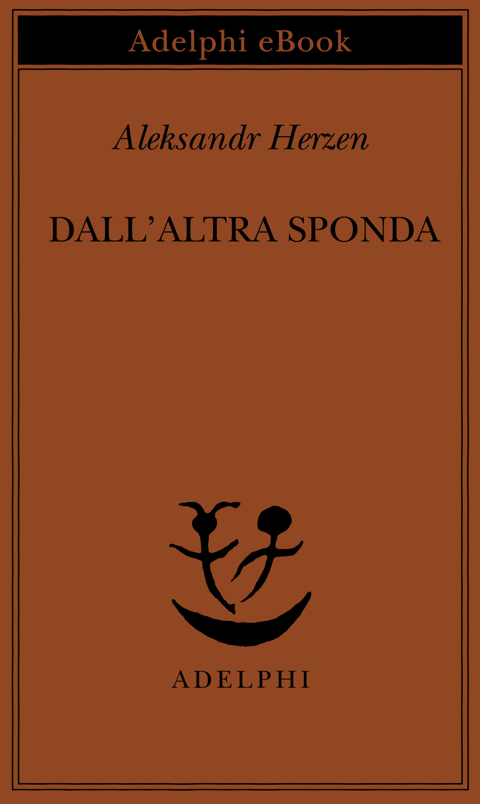

32:51 · 7 OPERE
Perché c’è bisogno della cosiddetta "crisi dei migranti"?
Il filo del discorso
Nel contributo, collocato dal relatore nel 2018, Dr Divago propone una lettura storico-economica delle migrazioni e critica la contrapposizione mediatica fra emergenza e inevitabilità. Dopo aver ricordato l’Esodo e le migrazioni antiche, contesta l’assenza di confronti storici nel dibattito e richiama un’intervista di Stefano Allievi sulla distinzione fra richiedenti asilo e migranti economici. La sua tesi è che l’aumento della disponibilità di lavoro possa essere favorito da gruppi dominanti per indebolire il potere contrattuale dei lavoratori. Il passaggio dalle campagne alle città inglesi, la Great Migration afroamericana e l’emigrazione italiana del dopoguerra costituiscono tre confronti di epoche e contesti differenti. Da questi precedenti il relatore passa a un’ipotesi contemporanea sul finanziamento delle traversate e sullo sfruttamento politico dei conflitti sociali. La scheda mantiene distinta questa ipotesi dai dati e dai documenti necessari a provarla. Il confronto si estende al welfare, alle pensioni e alla trasformazione dei gruppi sociali. Nel finale, la lettura di Gramsci sulla crisi e la raccomandazione di Dall’altra sponda di Herzen sostengono l’invito a studiare i processi storici oltre gli slogan. Un frammento di Eraclito sull’esilio di Ermodoro conclude la critica all’espulsione delle capacità migliori. Il testo distingue testimonianze, analogie e affermazioni numeriche, evitando di attribuire ai migranti una responsabilità collettiva o un’unica causa alle migrazioni.
I libri nel discorso

Bibbia
Copertina: San Paolo, 2014 · Nuova Versione dai Testi Antichi · edizione di riferimento
Libro dell’Esodo, esplicitamente ricordato fra i racconti di fondazione legati a una migrazione.
Passaggio 4:15 ↗ · Fonti e libro ↗
Iliade
Copertina: Einaudi · ET Classici · 2014
Copertina autentica dell’edizione di riferimento, controllata visivamente. Non identifica l’esemplare letto o citato nel video.
Iliade come esempio di testo componibile nel modello della scimmia alla macchina da scrivere; non analisi dell’opera.
Passaggio 5:59 ↗ · Fonti e libro ↗
Odissea
Copertina: Einaudi · ET Classici · 2014
Copertina autentica controllata visivamente. Edizione di riferimento, non identificata come quella usata nel video.
Odissea come secondo esempio nel medesimo esperimento astratto; non recensione.
Passaggio 5:59 ↗ · Fonti e libro ↗
Amleto
Identificazione probabile
Copertina: BUR · 2022 · traduzione di Rocco Coronato · illustrazioni di John Austen
Immagine autentica dell’opera, controllata visivamente; non identifica l’edizione usata nel video.
Titolo deformato dall’ASR nel riferimento a Shakespeare: identificazione probabile di Amleto come esempio, non testo letto.
Passaggio 6:07 ↗ · Fonti e libro ↗
Quaderni del carcere
Copertina: Einaudi, ET Biblioteca, 18 luglio 2014, ISBN 9788806223441, edizione critica dell’Istituto Gramsci a cura di Valentino Gerratana, in quattro volumi con apparato. Copertina grigio-azzurra con ritratto di Gramsci; la scheda commerciale indica 3480 pagine, mentre alcune descrizioni catalografiche computano separatamente preliminari e testo. Edizione critica originaria 1975; i quaderni furono scritti nel 1929–1935. La variante commerciale Quaderni dal carcere non è registrata come seconda opera.
Copertina intera dell’edizione in quattro volumi, non una fotografia dei manoscritti o dei quattro dorsi. Il riferimento del video è al testo Q15§5, non all’intera edizione letta integralmente dal redattore.
Gramsci, Quaderni e passo sulla crisi; identificato Q15§5, 1933.
Passaggio 27:59 ↗ · Fonti e libro ↗
Dall’altra sponda
Copertina: COPERTINA DELL’EBOOK Adelphi, 2017, 260 pagine nella scheda, ISBN 9788845978609. Veste marrone con autore, titolo e marchio Adelphi eBook. Traduzione e note di Pia Pera, introduzione di Isaiah Berlin; edizione italiana nella Piccola Biblioteca Adelphi 317 dal 1993. È dichiarata una copertina elettronica, non la prova di un esemplare cartaceo mostrato nel filmato.
Immagine ufficiale intera dell’ebook: nessun frontespizio spacciato per copertina cartacea. L’introduzione di Berlin è tradotta da Annalisa Zicari Binnington, secondo il catalogo Adelphi.
Alexander/Aleksandr Herzen e Dall’altra sponda, titolo esplicito, raccomandazione di lettura sul 1848.
Passaggio 29:01 ↗ · Fonti e libro ↗
Frammenti
Identificazione probabile
Copertina: BUR · a cura di Francesco Fronterotta, testo greco a fronte, 2013
Immagine autentica dell’opera, controllata visivamente; l’edizione di riferimento non è attribuita al filmato.
Eraclito, Efesini e allontanamento di Ermodoro; frammento DK22B121, senza edizione identificata.
Passaggio 31:57 ↗ · Fonti e libro ↗